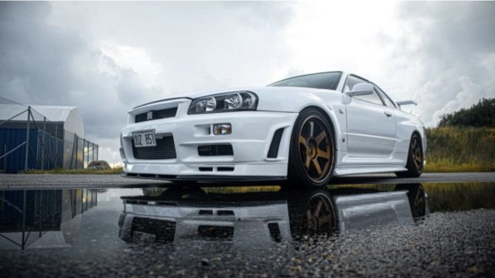
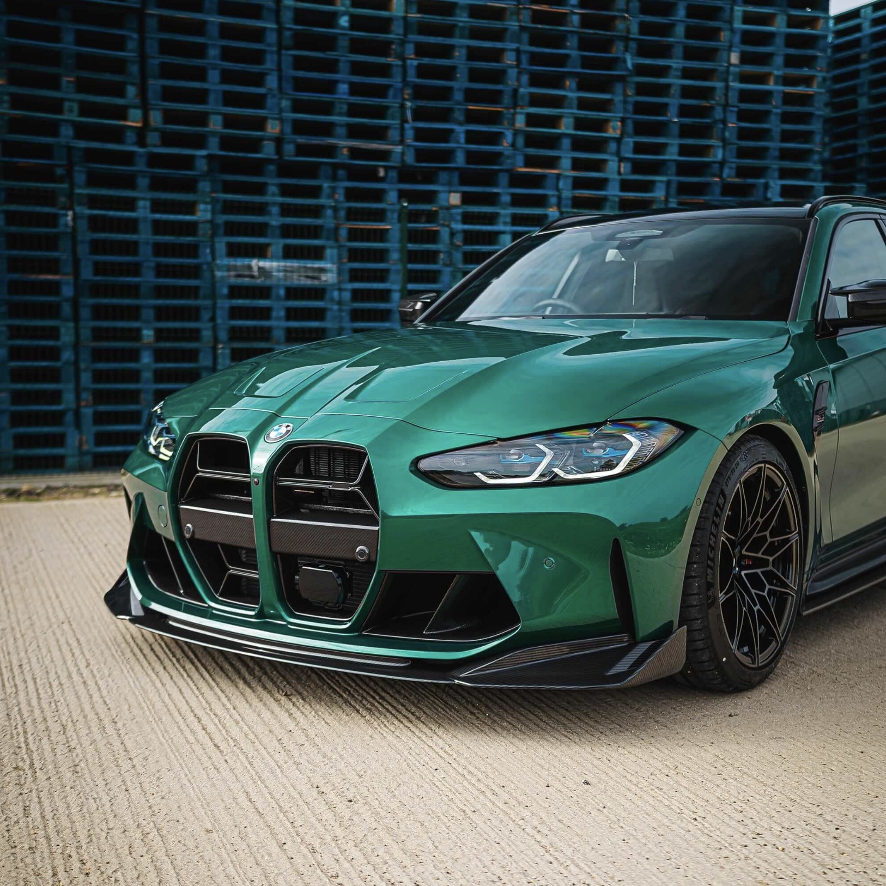
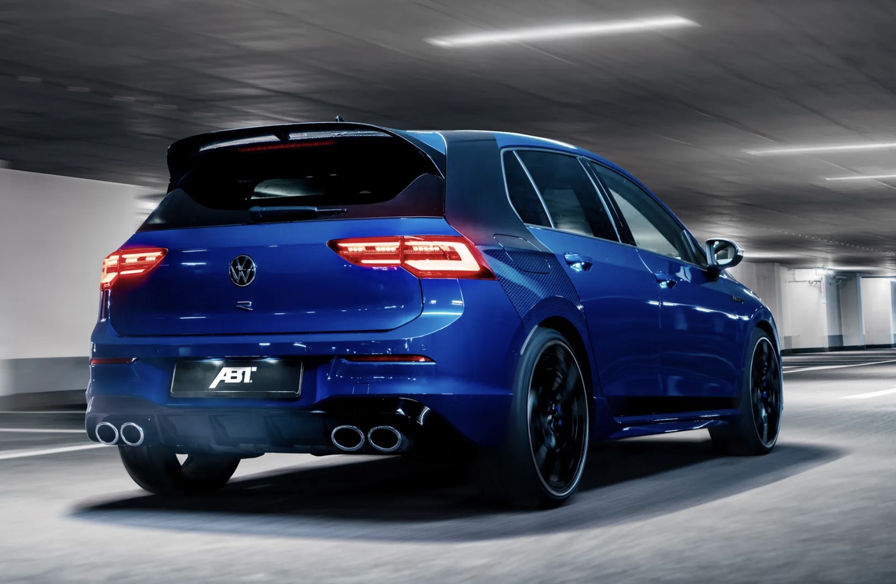
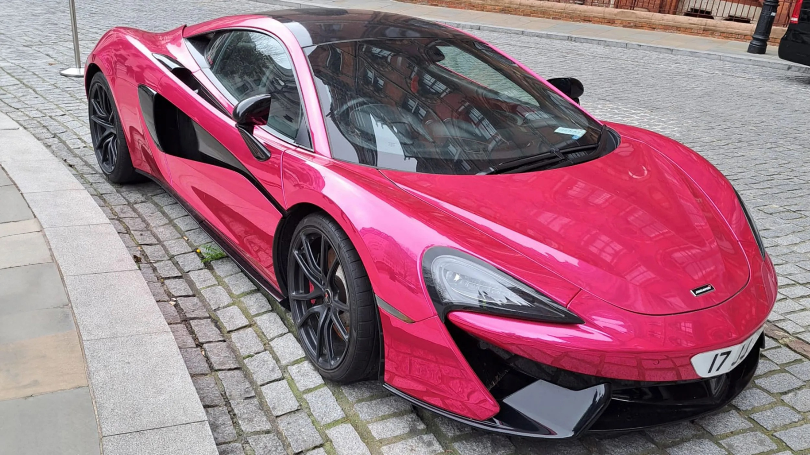
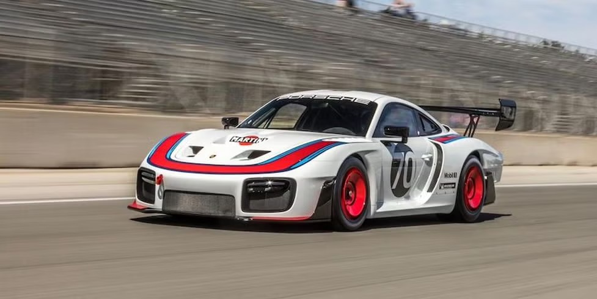

What is "the car scene"?
The car scene is more than just cars. It's a massive mix of different cars, people, styles, speed, culture all mashed together. It's not just “people who like cars”. It's whole communities built around different types of cars and different ways of modifying them and using them. Some people care about speed, some care about looks, some care about sound systems, some care about car rarity, and some just want something loud that shoots flames and turns heads.
Different Styles
JDM Cars - Japanese cars, lowered, clean fitment, turbo noises, night meets. Cars like Toyota GR Yaris, Supras, Skylines, MX-5s. German's — Clean builds, luxury mixed with performance. BMWs, Audis, AMGs. Usually dark tints and aggresive looks. Hot Hatch — Younger crowd usually, with their first cars they've turned into machines. Fast little cars, pops and bangs, affordable-ish. Golfs, Fiesta's, Corsa's, Peugeot's. Supercar's — Rich people flexing basically. Ferraris, Lambos, McLarens, wrapped in crazy colours. Track scene — Stripped interiors for weight loss, bucket seats, lap times, people obsessed with handling and speed.

JDM Cars

German Cars

Hot Hatch

Supercars

Track Cars